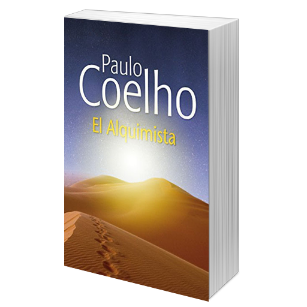
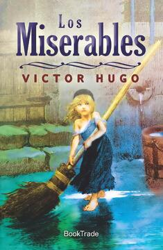

LIBROS

Cien años de Soledad
Gabriel García Márquez
Resumen
Es considerada una obra maestra de la literatura hispanoamericana y universal, así como una de las obras más traducidas y leídas en español. Fue catalogada como una de las obras más importantes de la lengua castellana.

El Alquimista
Paulo Coelho
Resumen
El estilo narrativo es directo ya que incluye los diálogos de los personajes. El narrador es un alquimista que cuenta la historia a un aprendiz. En esta historia se utilizan espacios reales y espacios imaginarios.

Los Miserables
Víctor Hugo
Resumen
La novela, de estilo romántico, plantea por medio de su argumento una discusión sobre el bien y el mal, sobre la ley, la política, la ética, la justicia y la religión.